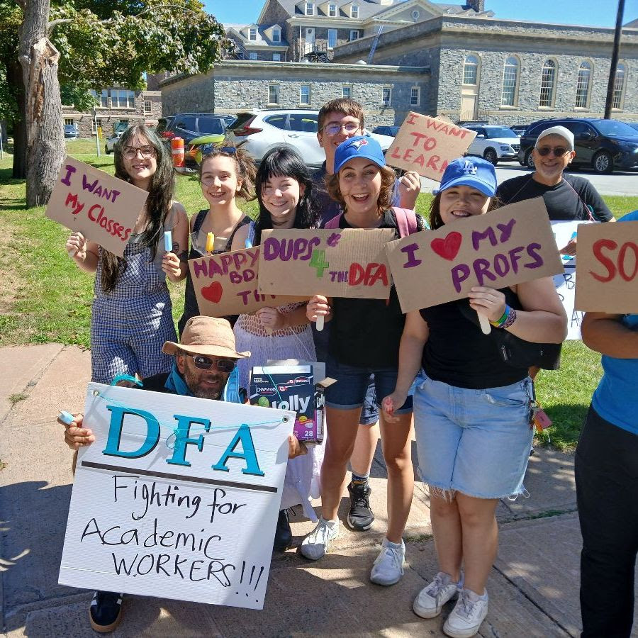
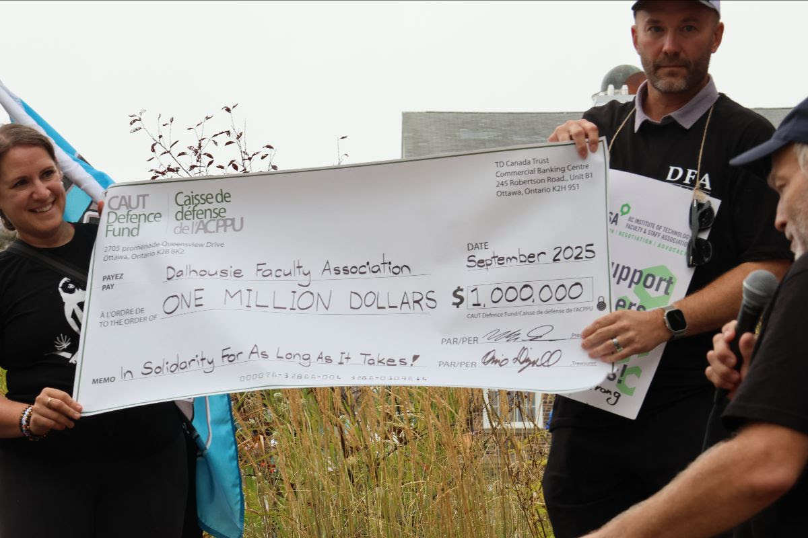
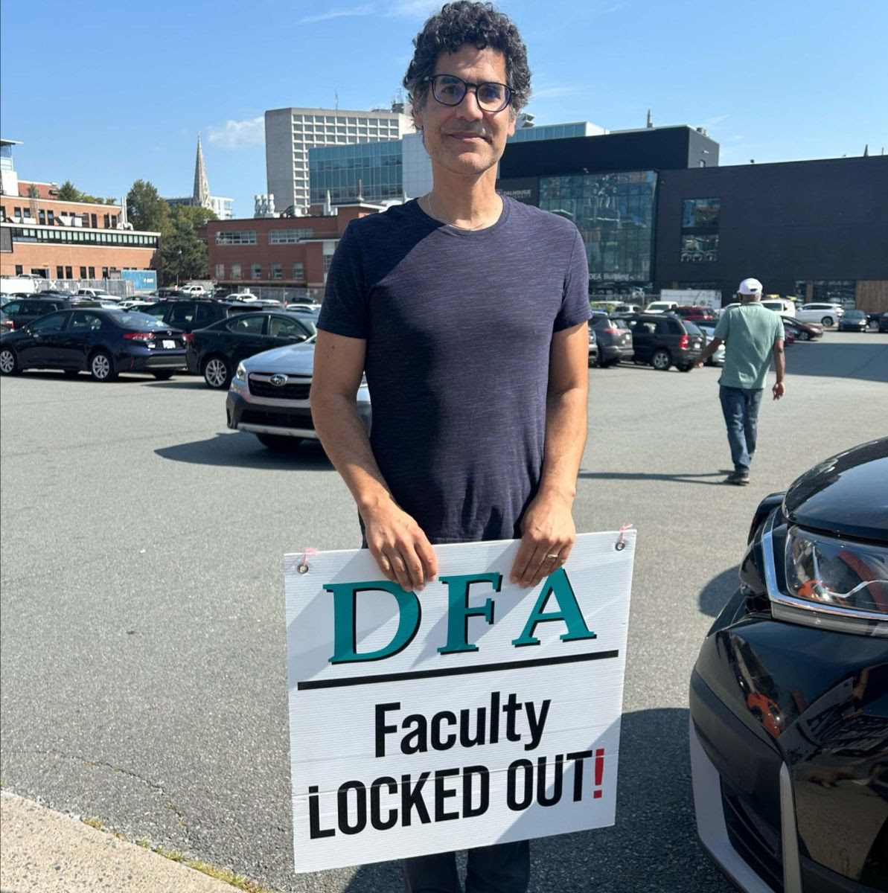
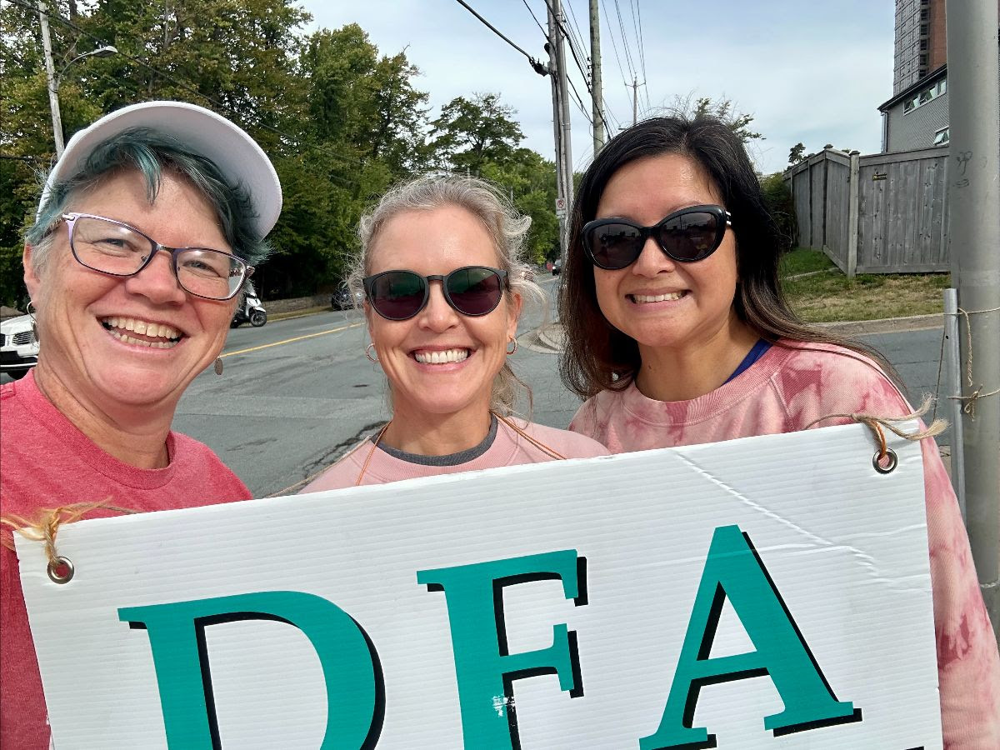

Daily Bulletin, September 10
Have an idea for something to cover?


President’s Message & Executive Committee Update
For those who may have missed President Dave Westwood’s message last night, we reprint it in full here:
I understand and appreciate that emotions are running high and that everyone is craving information and updates on a resolution to the lockout.
The Board and DFA both agreed to keep confidential all discussions and exchanges during conciliation, with any public releases to be jointly agreed by both parties. I recognize and understand why today’s release about the Conciliator ending the conciliation session does not provide much satisfaction or clarity on where things stand.
I called an emergency meeting of the DFA Executive Committee tonight to brief them on what has happened, because information shared with this group can be kept confidential within the terms of our agreement and because this group has decision-making authority.
Having now been briefed, the Executive Committee understands and supports the Bargaining Team as they continue the work of negotiating (1) a collective agreement that can be recommended to the membership, and (2) a return-to-work agreement that can be recommended to the membership.
We will continue to provide you with updates within the constraints of any agreements made with the Board around confidentiality. Both parties have agreed that confidentiality is an important condition for reaching a conclusion to the lockout.
Please continue your outstanding work on our physical and virtual picket lines, as your energy, passion, and enthusiasm is helping the DFA Bargaining Team to represent your interests at the table, and the solidarity that we are building will pay dividends long into the future.
It is important that we take the Executive’s full-throated support of the bargaining team after this update to heart! We know it’s been a long three weeks, but when you think of what we have managed to do–from our rallies and fundraising, to our information campaign, to receiving the full support and solidarity of our student union and so many individual students on the line, in the SUB, and elsewhere!–we know we can keep holding the line to achieve the full and fair deal that they are working for and that we deserve.
Solidarity with our students, our fellow workers, and importantly ourselves–our lines, our team, and our union will bring us to our goals!
Come Out to Support the DSU Student Rally!
A reminder that the Dalhousie Student Union is holding a rally today, starting at noon, in support of tuition refunds for students. The students will be meeting at the Dalhousie sign on Robie and University, and march up to the Hicks Building. DFA member Ajay Parasram will be speaking!
We encourage everyone who is available to attend to support our students as they have supported us–if you can be on campus and can attend, please do! We have also asked picket captains for the shift happening during the rally, as numbers on their lines allow, to allow some of their line to join the rally, too!
CAUT Meeting

Wednesday, September 10 at 2 pm (Atlantic) - Members of the DFA are invited to hear from the President and Vice-President of the Canadian Association of University Teachers (CAUT). In this short 30-minute session, Robin Whitaker and Marc Schroeder will talk about the work of CAUT, how to become more involved, and the important role of academic staff in the broader Canadian labour movement. Zoom link is below.
We also want to take this opportunity to thank CAUT for their unwavering support of our efforts. Joining rallies, organizing flying pickets and providing generous contributions from the CAUT Defense Fund, CAUT’s solidarity shows that we aren’t in this battle alone - we are backed for as long as it takes by 75,000 faculty members and their associations from coast to coast.
For the link to this online meeting, please see the email sent by Catherine Wall to membership on Sept 8th.
For more information about CAUT, please visit www.caut.ca.
Humans of Dalhousie: “First Week Woes”

“What did your first week of university mean to you as a student? What does it mean to you as a teacher?”
Christopher Snook (Lecturer, Classics and “Introduction to Humanities and to Social Sciences ASSC 1300 and ASSC 1400”)
My name is Christopher Snook, and I am an LTA in the Department of Classics with Arabic and Religious Studies. My first week of university as a student was in 1994 when I started the Foundation Year Program at the University of King’s College. For me, the excitement of that first week was being a part of a common intellectual endeavor and undertaking. That really meant, for me, being in class, sharing with and getting to know my peers, while together we learned how to think about large, significant questions that were already a part of my life. I was getting to know myself, and doing this work in classrooms with peers was among the richest and most rewarding part of my undergraduate education. I am a teacher who is specifically appointed to two of the Faculty of Arts and Social Science’s largest classes, Intro to Humanities and Into to Social Sciences (combined is roughly 700 students). What I miss most in the current labour disruption is the opportunity to be with students who have come to our campus and to the city of Halifax to study and ask large questions, to think about meaningful issues. I am missing the opportunity to be with them at a moment in their lives when they are discovering who they are, what they might think about the world, and how they might participate in the world in new and exciting ways. My hope is that the lockout ends swiftly, for the sake of the students here, and justly and fairly for the faculty who have been locked out.
Pink Shirt Day

Many of us will already know that for Halifax Regional Centre for Education schools, this Thursday, Sept. 11, is Stand Up Against Bullying Day. In 2007, Berwick Nova Scotia classmates David Shepherd and Travis Price bought and distributed 50 pink shirts after a student at their school was bullied for wearing a pink shirt. With that act of kindness, Pink Shirt Day was born!
We’d like to invite everyone to help stand up against bullying, either in schools or in workplaces, or anywhere, by wearing pink to the lines on Thursday!